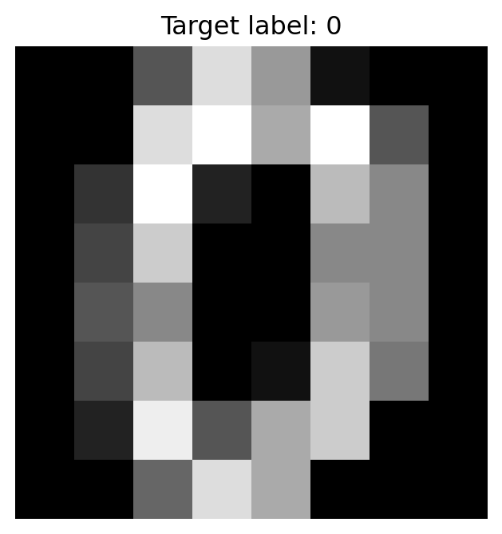
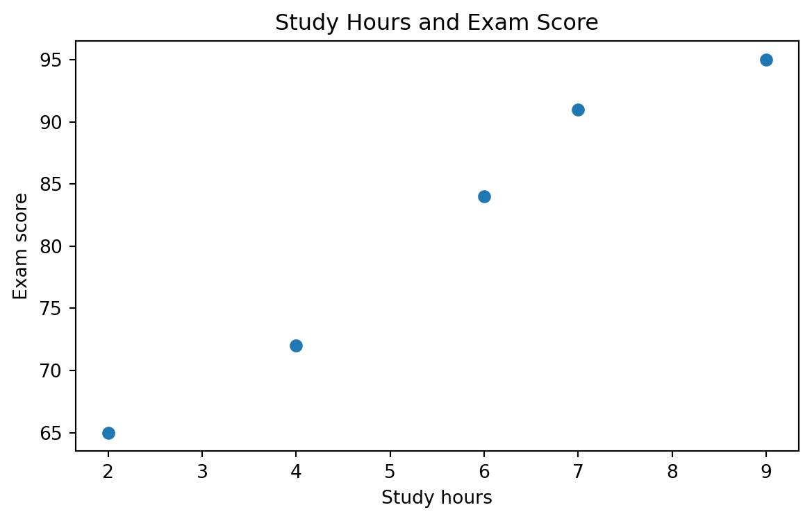

course = "Machine Learning"
edition = 2
threshold = 0.80
is_reproducible = True
type(course), type(edition), type(threshold), type(is_reproducible)(str, int, float, bool)By the end of this chapter, you should be able to:
A machine learning model is only as trustworthy as the computational process that produced it.
Python makes it easy to move from an idea to executable analysis. That speed is valuable, but code can run successfully while embodying poor assumptions, undocumented transformations, leakage, fragile paths, or irreproducible dependencies.
Chapter 1 framed machine learning as a complete evidence-building process rather than an exercise in calling algorithms. This chapter provides the computational language for that process. Python will be used not only to fit models, but also to represent data, automate transformations, visualize evidence, document decisions, and reproduce analyses across the chapters that follow.
Python combines a readable general-purpose language with a large scientific-computing ecosystem.
| Library | Primary role |
|---|---|
| NumPy | numerical arrays and vectorized computation (Harris et al. 2020) |
| pandas | tabular data manipulation |
| Matplotlib | foundational plotting (Hunter 2007) |
| Plotly | interactive visualization when interactivity adds value |
| scikit-learn | preprocessing, modeling, evaluation, pipelines (Pedregosa et al. 2011) |
| SciPy | scientific and numerical routines (Virtanen et al. 2020) |
| statsmodels | statistical modeling and inference in selected applications |
The goal is not to memorize library names. It is to understand how the tools participate in a coherent analytical workflow.
Our primary workflow uses VS Code, Python, Quarto, Git, and GitHub. Quarto can execute Python code embedded in Markdown so generating code remains connected to tables, figures, and interpretation (Quarto 2026).
A small project might look like:
my-ml-project/
├── data/
│ ├── raw/
│ └── processed/
├── figures/
├── src/
│ └── prepare_data.py
├── analysis.qmd
├── README.md
├── requirements.txt
└── .gitignoreDifferent projects can require different package versions. Python’s venv module creates isolated environments (Python Software Foundation 2026).
python -m venv .venvWindows PowerShell:
.venv\Scripts\Activate.ps1macOS/Linux:
source .venv/bin/activateInstall packages:
python -m pip install numpy pandas matplotlib scikit-learn jupyterRecord dependencies:
python -m pip freeze > requirements.txtRecreate them:
python -m pip install -r requirements.txtA project should not depend silently on whatever happens to be installed on one computer.
course = "Machine Learning"
edition = 2
threshold = 0.80
is_reproducible = True
type(course), type(edition), type(threshold), type(is_reproducible)(str, int, float, bool)features = ["age", "bmi", "sleep_hours", "activity_minutes"]
study = {
"dataset": "NHANES",
"unit_of_analysis": "participant",
"target": "systolic_blood_pressure"
}score = 0.87
interpretation = "meets illustrative threshold" if score >= 0.80 else "below threshold"
interpretation'meets illustrative threshold'def mean_absolute_error_manual(actual, predicted):
errors = [abs(a - p) for a, p in zip(actual, predicted)]
return sum(errors) / len(errors)
mean_absolute_error_manual([10, 12, 14], [11, 10, 15])1.3333333333333333Functions convert repeated analytical logic into reusable, auditable units.
import numpy as np
x = np.array([2.0, 4.0, 6.0, 8.0])
2 * xarray([ 4., 8., 12., 16.])Vectorized operations allow us to operate on arrays as mathematical objects.
X_demo = np.array([
[1.2, 3.1],
[2.4, 1.8],
[3.0, 4.2]
])
X_demo.shape(3, 2)This connects to
\[ X \in \mathbb{R}^{n \times p}, \]
where \(n\) is the number of observations and \(p\) the number of features.
Tabular data are not the only data machine-learning systems consume. A grayscale image can be represented numerically as a two-dimensional array, while a color image is commonly represented with an additional channel dimension.
For an image of height (H) and width (W),
\[ I\in\mathbb{R}^{H\times W} \]
for grayscale data, while a color image can be represented as
\[ I\in\mathbb{R}^{H\times W\times C}, \]
where (C) is the number of channels.
from sklearn.datasets import load_digits
import matplotlib.pyplot as plt
digits = load_digits()
image = digits.images[0]
label = digits.target[0]
image.shape, label((8, 8), np.int64(0))plt.figure(figsize=(4, 4))
plt.imshow(image, cmap="gray")
plt.title(f"Target label: {label}")
plt.axis("off")
plt.show()
This is an important bridge to computer vision: an image is visually meaningful to a person, but a learning algorithm receives a numerical representation.
Flattening an (HW) image produces a vector with (HW) values:
\[ I\in\mathbb{R}^{H\times W} \rightarrow x_i\in\mathbb{R}^{HW}. \]
That transformation preserves pixel values but makes the original two-dimensional neighborhood structure less explicit. Later chapters will examine why representation matters so much for visual learning.
pandas provides labeled tabular data structures for data manipulation and analysis (pandas development team 2026).
import pandas as pd
students = pd.DataFrame({
"study_hours": [4, 7, 2, 9, 6],
"attendance": [0.82, 0.94, 0.71, 0.97, 0.88],
"exam_score": [72, 91, 65, 95, 84]
})
students| study_hours | attendance | exam_score | |
|---|---|---|---|
| 0 | 4 | 0.82 | 72 |
| 1 | 7 | 0.94 | 91 |
| 2 | 2 | 0.71 | 65 |
| 3 | 9 | 0.97 | 95 |
| 4 | 6 | 0.88 | 84 |
Inspect before transforming:
students.shape(5, 3)students.dtypesstudy_hours int64
attendance float64
exam_score int64
dtype: objectstudents.describe()| study_hours | attendance | exam_score | |
|---|---|---|---|
| count | 5.000000 | 5.000000 | 5.000000 |
| mean | 5.600000 | 0.864000 | 81.400000 |
| std | 2.701851 | 0.103586 | 12.660964 |
| min | 2.000000 | 0.710000 | 65.000000 |
| 25% | 4.000000 | 0.820000 | 72.000000 |
| 50% | 6.000000 | 0.880000 | 84.000000 |
| 75% | 7.000000 | 0.940000 | 91.000000 |
| max | 9.000000 | 0.970000 | 95.000000 |
Ask what one row represents, which columns are identifiers, which variable is the target, whether units are documented, and whether missingness has meaning.
students[["study_hours", "exam_score"]]| study_hours | exam_score | |
|---|---|---|
| 0 | 4 | 72 |
| 1 | 7 | 91 |
| 2 | 2 | 65 |
| 3 | 9 | 95 |
| 4 | 6 | 84 |
students.loc[students["attendance"] >= 0.90]| study_hours | attendance | exam_score | |
|---|---|---|---|
| 1 | 7 | 0.94 | 91 |
| 3 | 9 | 0.97 | 95 |
X = students[["study_hours", "attendance"]]
y = students["exam_score"]
print("X shape:", X.shape)
print("y shape:", y.shape)X shape: (5, 2)
y shape: (5,)Construct these intentionally. Leaving the target—or a post-outcome proxy—inside \(X\) can create leakage.
A ZIP code can be stored as an integer without being a quantitative measurement. The same distinction applies to IDs, diagnosis codes, ordinal responses, dates, and text.
example = pd.DataFrame({
"age": [22, 35, np.nan, 51],
"income": [42000, np.nan, 61000, 79000]
})
example.isna().sum()age 1
income 1
dtype: int64Deleting every incomplete row or replacing every missing value with a mean is not automatically defensible. Later chapters will treat imputation within pipelines. Here, develop the habit of inspecting and documenting missingness before acting.
Your current course material uses Plotly with Gapminder, Iris, and Tips to introduce bar, line, scatter, and histogram graphics. We retain the pedagogical value while shifting the emphasis from making charts to answering questions.
import matplotlib.pyplot as plt
plt.figure(figsize=(7, 4))
plt.scatter(students["study_hours"], students["exam_score"])
plt.xlabel("Study hours")
plt.ylabel("Exam score")
plt.title("Study Hours and Exam Score")
plt.show()
Ask:
What feature of the data am I trying to understand?
Interactive Plotly graphics are valuable when interaction materially improves understanding. Stable static figures are often preferable for publication artifacts.
A line such as pd.read_csv("data.csv") conceals the dataset’s history.
Record at least:
| Field | What to record |
|---|---|
| Source | authoritative provider |
| Dataset | official dataset name |
| Location/API | source endpoint |
| Retrieval date | when acquired |
| Version/cycle | release or survey cycle |
| Unit of analysis | what one row represents |
| Transformations | raw-to-processed steps |
| License/terms | applicable use conditions |
from sklearn.datasets import load_wine
wine = load_wine(as_frame=True)
wine.frame.head()| alcohol | malic_acid | ash | alcalinity_of_ash | magnesium | total_phenols | flavanoids | nonflavanoid_phenols | proanthocyanins | color_intensity | hue | od280/od315_of_diluted_wines | proline | target | |
|---|---|---|---|---|---|---|---|---|---|---|---|---|---|---|
| 0 | 14.23 | 1.71 | 2.43 | 15.6 | 127.0 | 2.80 | 3.06 | 0.28 | 2.29 | 5.64 | 1.04 | 3.92 | 1065.0 | 0 |
| 1 | 13.20 | 1.78 | 2.14 | 11.2 | 100.0 | 2.65 | 2.76 | 0.26 | 1.28 | 4.38 | 1.05 | 3.40 | 1050.0 | 0 |
| 2 | 13.16 | 2.36 | 2.67 | 18.6 | 101.0 | 2.80 | 3.24 | 0.30 | 2.81 | 5.68 | 1.03 | 3.17 | 1185.0 | 0 |
| 3 | 14.37 | 1.95 | 2.50 | 16.8 | 113.0 | 3.85 | 3.49 | 0.24 | 2.18 | 7.80 | 0.86 | 3.45 | 1480.0 | 0 |
| 4 | 13.24 | 2.59 | 2.87 | 21.0 | 118.0 | 2.80 | 2.69 | 0.39 | 1.82 | 4.32 | 1.04 | 2.93 | 735.0 | 0 |
Benchmark data are excellent for learning workflows and algorithms. Convenience alone does not create research novelty.
NHANES provides public demographic, examination, laboratory, behavioral, and other health data (National Center for Health Statistics 2024). Researchers must understand survey cycles, variable documentation, units, eligibility, missing codes, and the intended population.
IPEDS and related public postsecondary data support institutional analyses involving enrollment, completions, graduation, finances, staffing, and other characteristics (National Center for Education Statistics 2026). The unit of analysis may be an institution or institution-year rather than a person.
The Python syntax can be similar across tracks. The scientific meaning is not.
def summarize_numeric_column(df, column):
return {
"n": df[column].notna().sum(),
"missing": df[column].isna().sum(),
"mean": df[column].mean(),
"median": df[column].median()
}
summarize_numeric_column(students, "exam_score"){'n': np.int64(5),
'missing': np.int64(0),
'mean': np.float64(81.4),
'median': np.float64(84.0)}As an analysis stabilizes, repeated logic should migrate into functions.
A disciplined process is:
A minimal workflow:
git status
git add .
git commit -m "Document Chapter 2 analysis workflow"
git pushDo not commit credentials, private data, or .venv.
Quarto can execute Python within Markdown so code, output, prose, equations, and citations remain connected (Quarto 2026).
#| label: fig-example
#| fig-cap: "A meaningful caption"
#| warning: falseThe goal is to generate outputs reproducibly rather than copy them manually into a report.
Using the Wine dataset:
Create:
chapter02-lab/
├── data/
│ ├── raw/
│ └── processed/
├── figures/
├── src/
├── analysis.qmd
├── README.md
├── requirements.txt
└── .gitignoreThen create .venv, install packages, load a dataset, document provenance, inspect it, define \(X\) and \(y\), create purposeful figures, move one repeated transformation into a function, render the Quarto analysis, and commit the project.
The goal is not yet the best predictive model. It is a workflow another analyst can understand and reproduce.
Ask an AI coding assistant to generate a function that summarizes missing values in a DataFrame. Audit whether it reports counts and percentages correctly, handles edge cases, mutates data, and makes claims consistent with the code.
Focus on environments, project structure, arrays, DataFrames, visualization, feature/target construction, reusable functions, debugging, and version control.
Focus additionally on provenance, measurement meaning, preservation of raw data, auditable transformations, and a reproducible path from source evidence to reported output.
Consider:
import pandas as pd
from sklearn.ensemble import RandomForestClassifier
from sklearn.model_selection import train_test_split
df = pd.read_csv("student_data.csv")
df = df.dropna()
X = df.drop(columns=["student_id"])
y = df["retained"]
X_train, X_test, y_train, y_test = train_test_split(X, y)
model = RandomForestClassifier()
model.fit(X_train, y_train)
print(model.score(X_test, y_test))The code may run. Audit it before rewriting it.
Consider target leakage, undocumented row deletion, class imbalance, random vs stratified/grouped/temporal splitting, random seeds, post-outcome predictors, categorical representation, the meaning of score(), reliance on one split, provenance, population, and environment reproducibility.
Choose one track and create a data-intake memo containing dataset/source, analytical purpose, unit of analysis, target, feature families, measurement concerns, missingness, provenance, raw/processed structure, reproducible transformations, one leakage risk, and one question the dataset alone cannot answer.
X.shape == (500, 12) mean?dropna() not automatically defensible?Verify that your project reveals the Python environment, dependencies, data source, raw/processed distinction, transformations, construction of \(X\) and \(y\), figure-generation code, result-generation code, and version history.